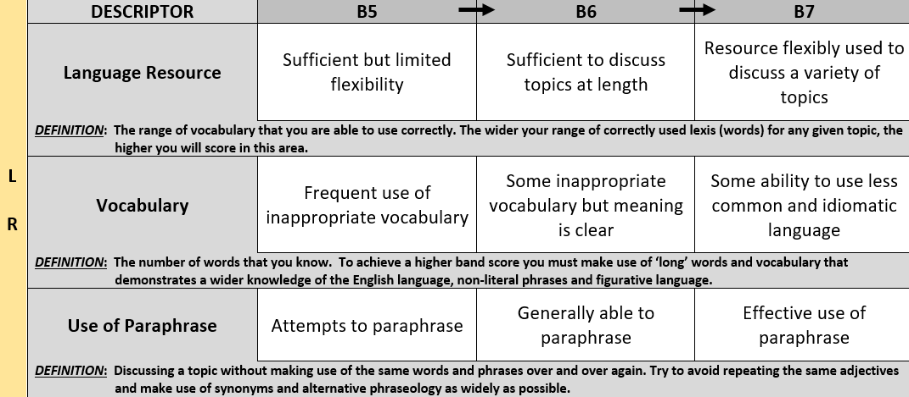
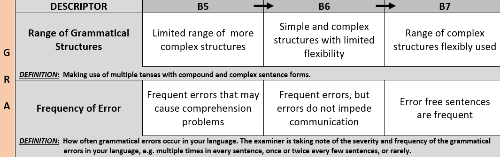
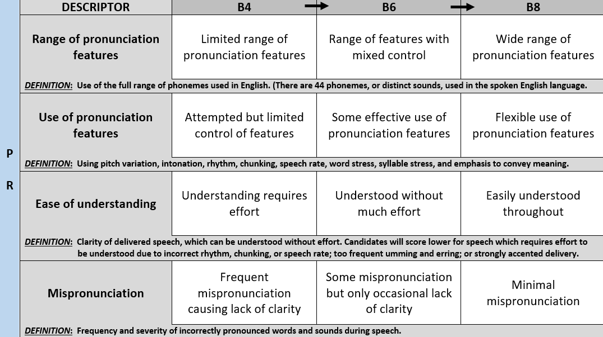

THE SPEAKING TEST

The IELTS Speaking test takes the form of a face-to-face interview with a qualified IELTS speaking examiner. The interview is split into three sections and follows a preset script which the examiner must adhere to.
After a short introduction you will be asked 8 short answer questions on two topics lasting 4 - 5 minutes, followed by the 'long turn' question where you are given one minute to prepare and make some notes before speaking for 2 minutes uninterupted on a given topic. Finally you will discuss 6 questions related to the topic of your long turn response for the remaining 4 - 5 minutes of the interview.
The total duration of the interview will be 13 - 14 minutes.
Let's look at the three sections of the interview in more detail:
PART 1 - introduction and short answer questions (4-5 mins)
The examiner will begin the interview by reading out the date and test venue identification details for the benefit of the recording. (All IELTS interviews are recorded for the full duration of the time you are in the interview room).
The examiner will then read out your name and IELTS identification number followed by their own name and examiner identification number. You will then be asked to show your passport or national ID card for verification.
Before asking you two sets of general topic, short answer questions the examiner will begin by asking you about your home and where you live or about your study or work situation. The questions will be something like these:
Following this the examiner will go straight into two sets of (four) general topic short answer questions. For example:
The total duration for Part 1 should be about four and a half to five minutes.
Part 1 is not a discussion, the examiner can use the "Why/Why not? " prompts if he/she feels you are not extending your answer sufficiently, but nothing more than that.
PART 2 - the long turn (3-4 mins)
Upon completion of Part 1 the examiner will say, "Now i'm going to give you a topic and i'd like you to talk about it for 1 to 2 minutes." You will then be given a topic card, pencil and a piece of blank paper and allowed 1 minute to make some notes on the topic.
After your 1 minute preparation time the examiner will say, "Remember, you have 1 to 2 minutes for this, so don't worry if i stop you, can you start speaking now please."
The examiner will not speak again until your 2 minutes time is up. (Unless you stop speaking before 1:40s, in which case the examiner will prompt you to say more.)
Below is an example of a Part 2 topic card:
After your two minutes speaking time the examiner will ask you to stop speaking and will ask you one or two short rounding-off questions before leading into Part 3. (You should give a short reply to these questions only).
PART 3 - discussion (4-5 mins)
The final section of the speaking test is a 4 to 5 minute discussion based on topics related to your Part 2 long turn.
In Part 3 the examiner has a choice of three sets of three questions, from which he/she will select two to base the discussion around. In this final part of the test the examiner is able to discuss the questions in a more natural manner and will ask you a few additional follow-up questions based on your answers to previous questions.
In this part of the test the examiner is testing your ability to respond to questions in a variety of different ways and is trying to elicit specified forms of language in response to the questions.
The questions are structured in the following way:
After around four and a half minutes of discussion the examiner will thank you for your time and end the interview.
The total duration of the interview will be 13 - 14 minutes.
Speaking Assessment
During the Speaking Test interview the examiner is using a rubric very similar to the one shown below.
You can see the rubric is split into 4 columns. Each column represents one of the four speaking assessment criteria:
- FLUENCY & COHERENCE (FLC)
- LEXICAL RESOURCE (LR)
- GRAMMATICAL RANGE & ACCURACY (GRA)
- PRONUNCIATION (PR)
Under each of these headings you will see a list of bullet-pointed descriptors which describe the parts of speech which must be demonstrated by the candidate in order to achieve the corresponding band score rating.
The IELTS interviewer has all of these criteria in mind and, as the interview progresses, is looking for examples of each in order to be able to score your performance effectively.
To be awarded a particular band level rating you must be able to demonstrate all of the descriptors specified at the corresponding band level.
FLUENCY & COHERENCE
Fluency & Coherence is a measure of how fluently you are able to communicate. There are three main descriptors within the FLC criterion that the examiner is focusing on: your ability to speak at length; the frequency of hesitation, repetition and self-correction in your language; and your use of connective features such as pronouns, conjunctions and spoken discourse markers.
Take a look at how these three descriptors change from Band 5 (B5) up to Band 7 (B7):
Focus on and practice your FLC skills with the Level 3 InsideIELTS Virtual Examiner now!
LEXICAL RESOURCE
Lexical Resource is the level and range of vocabulary that you are able to use. The examiner is analysing your language to guage the extent of your vocabulary resource; the range and accuracy of your language; and your ability to make use of paraphrase in an extended response.
Take a look at how these three descriptors change from Band 5 (B5) up to Band 7 (B7):

Focus on and practice your LR skills with the Level 4 InsideIELTS Virtual Examiner now!
GRAMMATICAL RANGE & ACCURACY
Grammatical Range and Accuracy measures the range of different grammatical forms and tenses that you are able to use correctly. The examiner is listening to your answers to determine the range of simple, compound and complex structures you make use of and how often grammatical errors occur in your response.
Take a look at how these three descriptors change from Band 5 (B5) up to Band 7 (B7):

Practice speaking with the InsideIELTS Virtual Examiner to increase your GRA score now!
PRONUNCIATION
The fourth criteria the examiner is assessing is pronunciation: your ability to make correct use of rhythm, stress and intonation in your speech. Mispronunciation and ease of understanding for the listener are also factors being taken into consideration.
Take a look at how these three descriptors change from Band 4 (B4) up to Band 8 (B8):

* If you examine the speaking rubric you will see that to achieve a Band 7 for PR you must fulfill all of the Band 6 criteria and some, but not all, of the criteria from Band 8.
Focus on and practice your PR skills with the Level 2 InsideIELTS Virtual Examiner now!
Speaking Materials
The Speaking Test has 3 sections and will last 13 - 14 minutes.
One full set of interview questions can be seen below.
Part 1
Introduction and short answer questions (4-5 mins)
Part 2
Long turn (1 minute preparation, 2 minutes talking time)
Part 3
Discussion (4 - 5 minutes)
Many candidates get very nervous before taking the IELTS Speaking Test interview. It is the final part of the IELTS test and it's normal to feel this way. The key to performing well in the Speaking Test is to be familiar with the interview format and content, and to have a clear understanding of the IELTS speaking assessment critieria that the examiner is using to rate your performance.